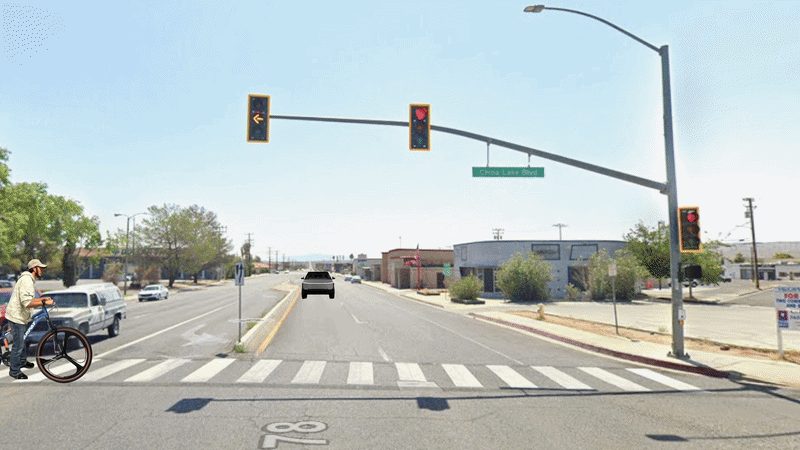
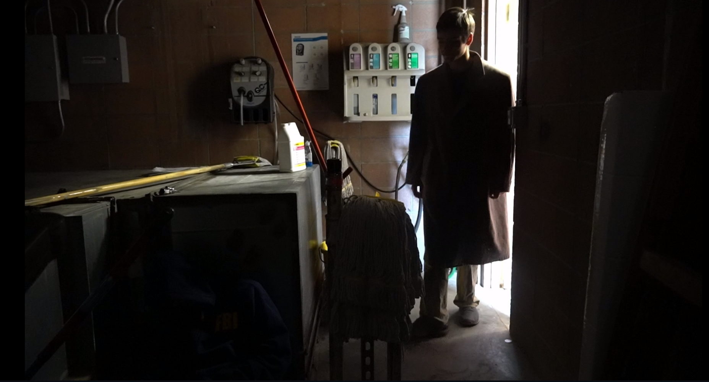
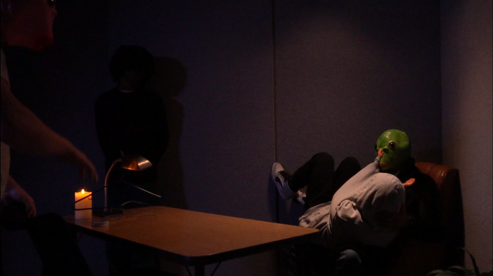
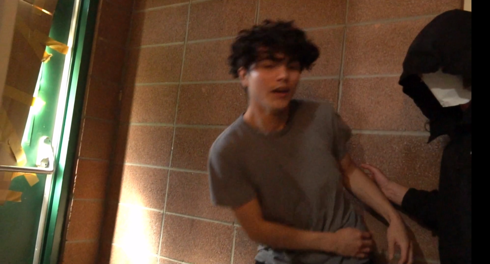
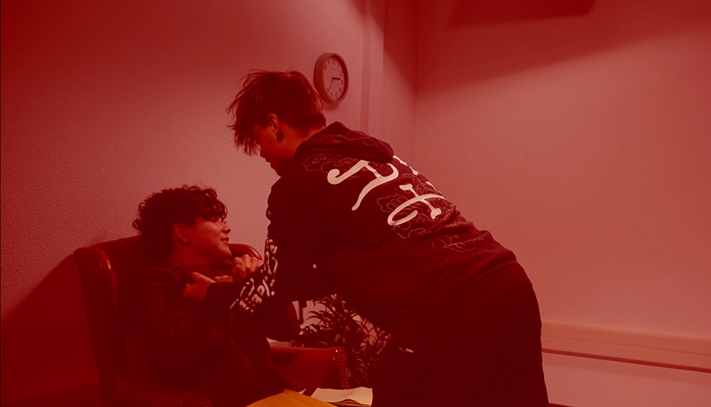
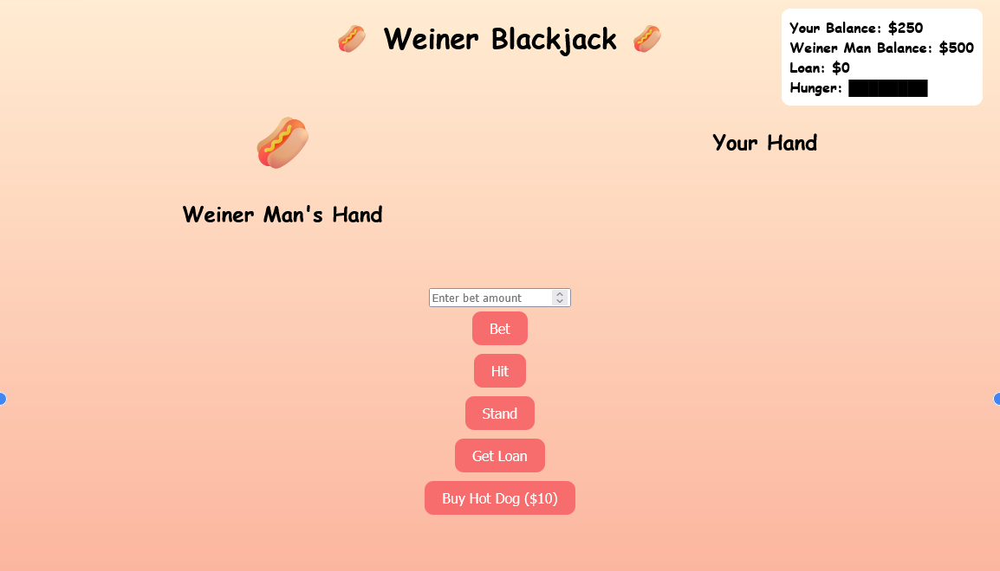

Portfolio
A collection of cinematic experiments and digital projects.
Featured Work
Post-Production
Visual Breakdown: Stylized Reenactments & Creative Problem Solving

Sequence A

Sequence B
These sequences were created for a documentary project as stylized reenactments based on real stories from classmates. Using still photography, keyframe animation, and editing techniques, I built short stop-motion-inspired scenes that added humor and personality while solving production limitations creatively. Originally, we were going to do live-action reenactments, but because of setbacks, we had to cancel them. In place, I made these in place with a short amount of time we had left, I made these in place. I know they are silly, but I am rather proud of them.
- Photo-based stop motion animation
- Keyframed movement and timing
- Experimental documentary reenactments
- Comedic visual storytelling
Visual Composition
Cinematography
Assisted with framing, lighting, and scene coverage during production exercises


Although being a cameraman was not my main role in the films, I still did my fair share of camera work, being the main cameraman for 2 films and assisting in others. Before this class, I had no idea how to operate a camera, but I can say I can use one now to at least a basic level standard, as well as having an understanding of how composition and lighting work, and how they can affect scenes.
- Practical cinematography experience
- Basic lighting and scene composition
- Shot framing and camera setup
- Camera operation & handling
Performance
Acting & Performance
Participating in class film projects both on and off camera


Although most of my work focused on editing and production support, I also participated in a few on-screen roles. While my acting was not the best, being on camera helped me better understand communication and the collaborative process between crew members and performers. I believe it is important to experience different roles in production because understanding other people’s responsibilities makes teamwork more productive. And can help put healthy expectations, making conflict less likely.
- Participated in collaborative class film scenes
- Worked in both on-camera and production roles
- Experience following scene direction and timing
- Developed understanding of film production workflow
Digital Design
3D Modeling
Building environments, characters, and digital scenes in Blender


I recently became interested in 3D modeling. I enjoy trying to recreate characters I like in 3D, along with designing my own characters, objects, and small scenes. I originally started learning Blender because I wanted to make video games, but over time I found myself enjoying the process of modeling on its own. Unfortunately, I lost many of my larger projects after a hard drive failure, so the pieces shown here were created specifically for this portfolio. with the time i had.
- Environment and character modeling
- Lighting and scene composition
- Digital world-building and visual design
- Blender-based personal projects
Logic & Development
Coding
Building tools and interactive logic for digital media


I started learning programming about a year ago when I became interested in making video games. Since then, I’ve picked it up and dropped it multiple times because coding can be extremely frustrating, but it’s also so captivating. What keeps me interested is that programming feels creative to me in the same way art does. Even though I still consider myself bad at both, I enjoy experimenting, solving problems, and putting random ideas together to create something weird, abstract, and silly.
- Basic HTML and python
- Scripting and programming fundamentals
- Creative problem-solving
- Self-taught learning through personal projects